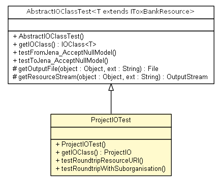

net.toxbank.client.io.rdf
Class ProjectIOTest

java.lang.Object
 net.toxbank.client.io.rdf.AbstractIOClassTest<net.toxbank.client.resource.Project>
net.toxbank.client.io.rdf.ProjectIOTest
net.toxbank.client.io.rdf.AbstractIOClassTest<net.toxbank.client.resource.Project>
net.toxbank.client.io.rdf.ProjectIOTest
public class ProjectIOTest
- extends AbstractIOClassTest<net.toxbank.client.resource.Project>
| Methods inherited from class java.lang.Object |
clone, equals, finalize, getClass, hashCode, notify, notifyAll, toString, wait, wait, wait |
ProjectIOTest
public ProjectIOTest()
getIOClass
public net.toxbank.client.io.rdf.ProjectIO getIOClass()
- Overrides:
getIOClass in class AbstractIOClassTest<net.toxbank.client.resource.Project>
testRoundtripResourceURI
public void testRoundtripResourceURI()
throws Exception
- Throws:
Exception
testRoundtripWithSuborganisation
public void testRoundtripWithSuborganisation()
throws Exception
- Throws:
Exception
Copyright © 2012 ToxBank project. All Rights Reserved.